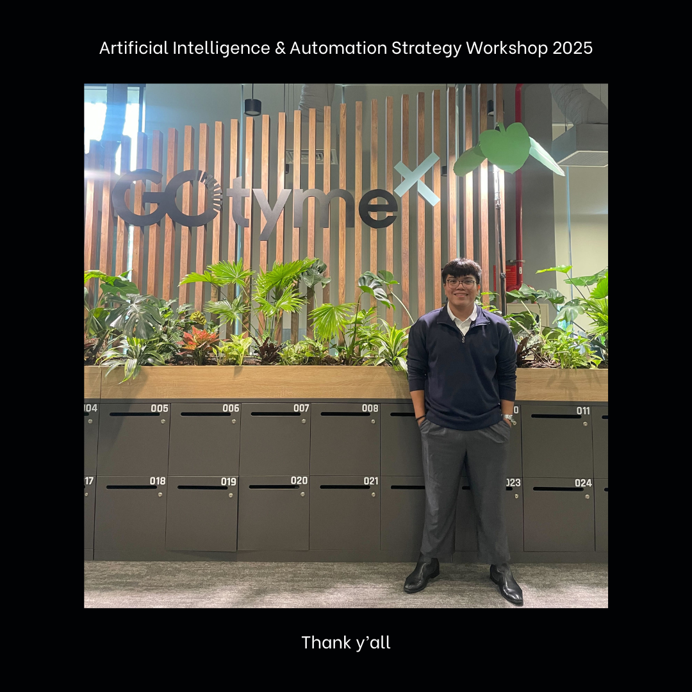
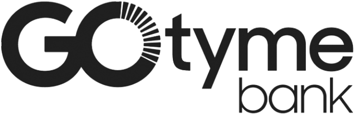
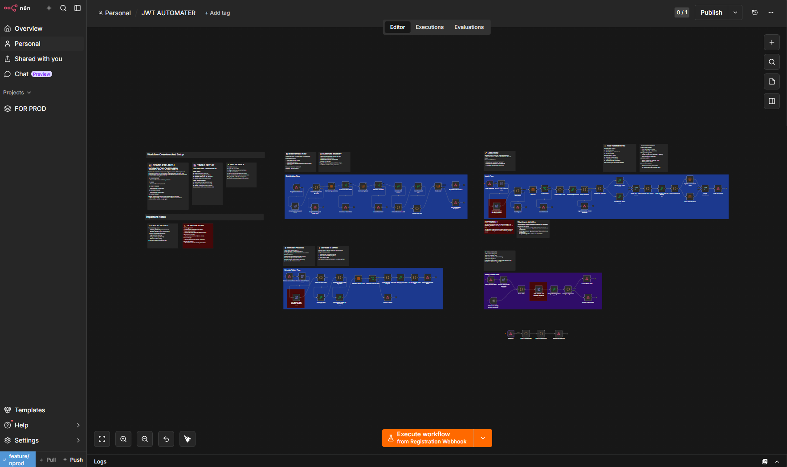
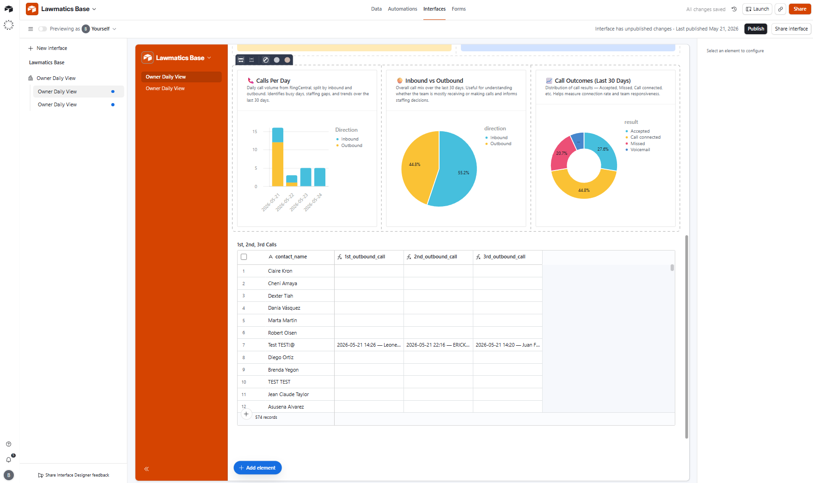

Welcome to Lyndon's Systems & AI Portfolio
I design AI-enabled systems that connect business goals, automation workflows, and secure enterprise operations. My work spans n8n automation, Lovable low-code systems, ChatGPT Enterprise, Claude Enterprise, MakeForms UAT, Meta CAPI architecture, MFT/CIBI secure file-transfer automation, and client-ready systems documentation.
Enterprise Promo & Workflow Systems
Systems analysis and delivery support for referral promos, campaign infrastructure, UAT environments, workflow automation, cyber-review preparation, and production readiness.
View Career Deep Dive
I operate at the intersection of business operations and technical delivery. My work is not only about building workflows; it is about understanding why a process exists, where it breaks, what systems are involved, how data moves, who signs off, and what the business needs to trust before launch.
| Field | Details |
|---|---|
| Name | Lyndon Kaizer C. Saturio |
| Location | Pasig City, Philippines |
| Role | AI Solutions Analyst / Systems Analyst |
| Specialty | AI automation, systems design, workflow analysis, UAT, secure file transfer |
| Education | BS Computer Engineering, Cum Laude, GPA 1.89 |
| Thesis | Smart Incubator using Modified Deep Convolutional Neural Networks |
| Thesis Note | Accepted by the National Library of the Philippines |
| Senior High | STEM, With Honors, 91.97 Average |
GoTyme Philippines
AI Solutions Analyst / Systems Analyst - TechOps

| Area | Specific Work |
|---|---|
| Promo Systems | Accenture Referral Program, payroll conversion, market penetration, referral flow support |
| Workflow Automation | n8n, MakeForms-to-n8n trigger review, scheduled workflows, AI Agent flows |
| Low-Code Apps | Lovable, AIE Project Hub, Lovable x n8n architecture review |
| AI Platforms | ChatGPT Enterprise, Claude Enterprise, Custom GPTs, migration planning |
| Martech | Meta Business Suite, Meta CAPI, AppsFlyer, MoEngage, Segment |
| Secure Transfer | MFT/CIBI, SFTP, FileZilla, Kleopatra, PGP/GPG, .gpg files |
| API Testing | cURL, REST APIs, JSON payloads, webhooks, authentication headers |
| Documentation | UAT notes, stakeholder updates, cyber-review coordination, production readiness |
- Analyzed enterprise promo systems for payroll-conversion and market-penetration initiatives.
- Coordinated promo readiness across 4 signoff tracks: vendor SIT/SAT, backend workflow automation, Cyber VAPT, and go-live preparation.
- Tracked referral-promo launch risk against a July 1 target go-live and 2-week vendor testing window.
- Validated staging-page and UAT MakeForms alignment for referral-promo implementation.
- Reviewed Meta CAPI and Meta Business Suite architecture for conversion tracking, business-chat tooling, hashed-user uploads, and Meta Ads Manager audience flows.
- Analyzed martech stack patterns involving AppsFlyer, MoEngage, Segment, Meta CAPI, attribution postbacks, Custom Audiences, and Lookalike Audiences.
- Supported MFT/CIBI automation by validating IAM access, SFTP paths, encrypted
.gpgfiles, outbound staging flows, and vendor file-exchange readiness. - Used FileZilla, Kleopatra, SFTP, PGP/GPG encryption, and secure file-transfer concepts to support encrypted BFILE/CFILE handling.
- Reviewed n8n workflow readiness across 6 production-control areas.
- Identified a MakeForms-to-n8n workflow risk where 100% of registrations could trigger executions, even when invalid.
- Coordinated ChatGPT-to-Claude migration planning for chats, projects, workflows, and custom GPTs.
- Supported Claude Enterprise and ChatGPT Enterprise adoption by comparing use cases, migration paths, workflow continuity, and user-readiness needs.
- Tested API and workflow behavior using cURL, REST APIs, webhooks, JSON payload validation, request/response checks, and authentication headers.
- Designed systems-analysis checks across 6 layers: UI, form capture, workflow automation, API integration, security review, and production operations.
Emerson
DevOps Infrastructure Intern
- Completed 240 hours of onsite DevOps Infrastructure internship work.
- Used K6 and Grafana to monitor Guardian website performance metrics.
- Automated website performance testing using PowerShell scripts, reducing manual effort and making the process 50% faster.
- Reviewed Microsoft Azure, Agile delivery, SQL pipeline creation, ETL concepts, and DevOps practices.
Case Study Archive | Client-safe project summaries | Last Updated: 2026

Reviewed conversion-signal architecture, event forwarding, hashed-user audience concepts, Custom Audiences, Lookalike Audiences, attribution postbacks, and campaign-measurement flows.

Supported secure vendor file-transfer automation involving encrypted BFILE/CFILE exchange paths, SFTP validation, IAM access requirements, outbound MFT staging flow review, and encrypted .gpg file handling.

Reviewed n8n workflow readiness, execution triggers, scheduled automations, AI Agent steps, credentials, and error handling. Identified a workflow risk where all registrations could trigger executions regardless of validity.

Troubleshot cross-system matching between Lawmatics matters and RingCentral calls using normalized phone fields, Airtable linked records, and upsert logic.
| Layer | What I Check | Example Tools |
|---|---|---|
| 1. User Interface | What the user sees and submits | Lovable, promo pages, dashboards |
| 2. Form Capture | Fields, validation, submission behavior | MakeForms, UAT forms |
| 3. Workflow Automation | Triggers, schedules, conditions, failures | n8n, AI Agents |
| 4. API Integration | Payloads, auth, webhooks, responses | cURL, REST APIs, JSON |
| 5. Security Review | Access, encryption, VAPT, secure transfer | IAM, SFTP, PGP/GPG, Kleopatra |
| 6. Operations | Monitoring, documentation, go-live handoff | Confluence, Jira, stakeholder updates |
How I Think Through a System
- What is the business goal?
- What user action starts the process?
- What data is captured?
- What system owns the data?
- What workflow runs next?
- What APIs or files are involved?
- What can fail?
- What must be validated before production?
- What does the stakeholder need to understand?
- What should be documented for handoff?
.gpg Files, IAM User Access, BFILE/CFILE Exchange, Staging Transfer FlowsAI workflows, promo systems, UAT coordination, secure file transfer, and systems documentation.
Representative work:- Referral promo readiness
- Payroll conversion support
- MakeForms UAT
- Meta CAPI architecture
- MFT/CIBI automation
Case studies are written in a client-safe format and exclude confidential implementation details, credentials, private links, and internal ticket numbers.
Let's discuss systems, automation, AI workflows, promo platform delivery, secure file-transfer validation, API integration, or stakeholder-ready documentation.
| Contact Type | Details |
|---|---|
| Work Email | kaizer.saturio@gotyme.com.ph |
| Personal Email | kaizersaturio@gmail.com |
| Phone | +63 917 794 9439 |
| GitHub | github.com/lyndonkaizer |
| Location | Pasig City, Philippines |